load("../gocd2/data/cleaned.rdata")
gocd2 <- diary %>% drop_na(`VPN-Zahl`)
lab_raw = readxl::read_xlsx("../gocd2/data/Datensatz_Zyklusstudie_Labor.xlsx") %>% drop_na(`VPN-Zahl`)
length(intersect(gocd2$`VPN-Zahl`, lab_raw$`VPN-Zahl`))[1] 134[1] 0[1] 23lab_only <- lab_raw %>%
# anti_join(gocd2, by= c("VPN-Zahl" = "VPN-Zahl")) %>%
mutate(
`Date LH surge` = as.Date(if_else(`Date LH surge` == "xxx", NA_real_, as.numeric(`Date LH surge`)), origin = "1899-12-30")
) %>%
select(id = `VPN-Zahl`,
estradiol = `IBL_Estradiol pg/ml`,
progesterone = `Progesterone pg/ml`,
estradiol_lcms = `Estradiol pg/ml`,
testosterone = `Testosterone pg/ml`,
cortisol = `Cortisol nmol/l`,
date = `Datum Lab Session`,
date_lh = `Date LH surge`,
date_mens = `Menstrual Onset`) %>%
mutate(bc_day = as.numeric(as.Date(date) - as.Date(date_mens)),
bc_day = if_else(bc_day > -1, NA_real_, bc_day)) %>%
group_by(id) %>%
arrange(date_mens) %>%
mutate(cycle = as.numeric(factor(date_mens))) %>%
group_by(id, cycle) %>%
mutate(date_lh = first(na.omit(date_lh)),
lh_day = as.numeric(as.Date(date) - date_lh)
) %>%
ungroup() %>%
arrange(id, cycle, date)Warning: There was 1 warning in `mutate()`.
ℹ In argument: `Date LH surge = as.Date(...)`.
Caused by warning in `vec_if_else()`:
! NAs introduced by coercionWarning: `qplot()` was deprecated in ggplot2 3.4.0.
This warning is displayed once per session.
Call `lifecycle::last_lifecycle_warnings()` to see where this warning
was generated.`stat_bin()` using `bins = 30`. Pick better value `binwidth`.Warning: Removed 138 rows containing non-finite outside the scale range
(`stat_bin()`).Warning: Removed 1 row containing missing values or values outside the scale
range (`geom_bar()`).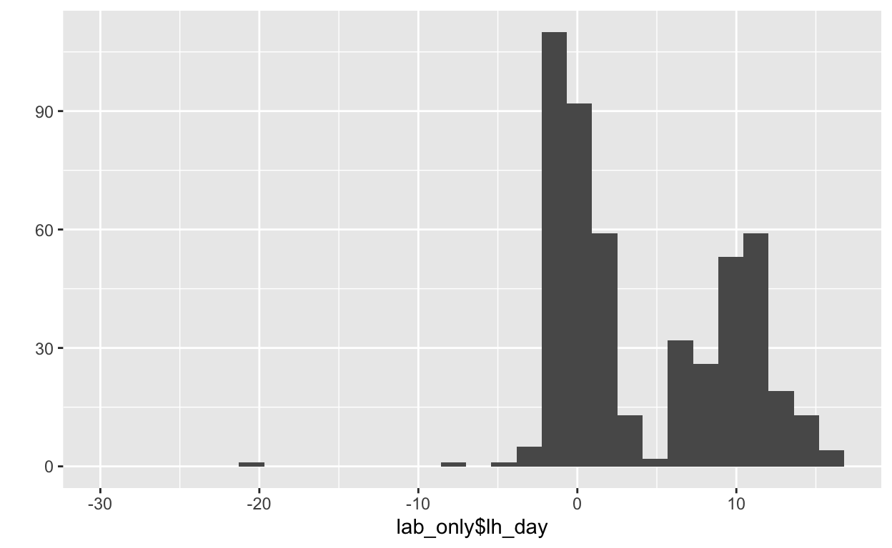
lab_only %>% summarise(n(), n_distinct(id))# A tibble: 1 × 2
`n()` `n_distinct(id)`
<int> <int>
1 628 157gocd2 %>% summarise(n(), n_distinct(session)) n() n_distinct(session)
1 445 134gocd2 <- gocd2 %>% select(id = `VPN-Zahl`,
date = created_date,
bc_day = menstrual_onset_days_until,
fc_day = menstrual_onset_days_since,
cycle_length) %>%
as_tibble()
gocd2 <- lab_only %>% left_join(gocd2, by = c("id", "date"), suffix = c("", "_diary"))
relstatage <- lab_raw %>% mutate(partner = if_else(Relationship_status == 1, 0, 1)) %>% select(id = `VPN-Zahl`, age = Age, partner) %>% distinct(id, .keep_all = TRUE)
gocd2 <- gocd2 %>% left_join(relstatage, by = c("id"))
gocd2 <- gocd2 %>%
# when we have a BC day from the online diary, we prefer it
mutate(bc_day = coalesce(bc_day_diary, bc_day)) %>%
select(-bc_day_diary)
range(gocd2$fc_day, na.rm = T)[1] 0 87
FALSE TRUE
185 443 range(gocd2$bc_day, na.rm = T)[1] -41 -1
FALSE TRUE
4 624 range(gocd2$lh_day, na.rm = T)[1] -20 16
FALSE TRUE
138 490 gocd2 <- gocd2 %>%
mutate(bc_day = if_else(is.na(cycle_length) & bc_day < -35, NA_real_, bc_day))
gocd2_u <- gocd2 %>% filter(is.na(cycle_length) | between(cycle_length, 25, 35))
range(gocd2_u$fc_day, na.rm = T)[1] 0 34
FALSE TRUE
185 358 range(gocd2_u$bc_day, na.rm = T)[1] -34 -1
FALSE TRUE
6 537 range(gocd2_u$lh_day, na.rm = T)[1] -20 16
FALSE TRUE
118 425 qplot(gocd2_u$lh_day)`stat_bin()` using `bins = 30`. Pick better value `binwidth`.Warning: Removed 118 rows containing non-finite outside the scale range
(`stat_bin()`).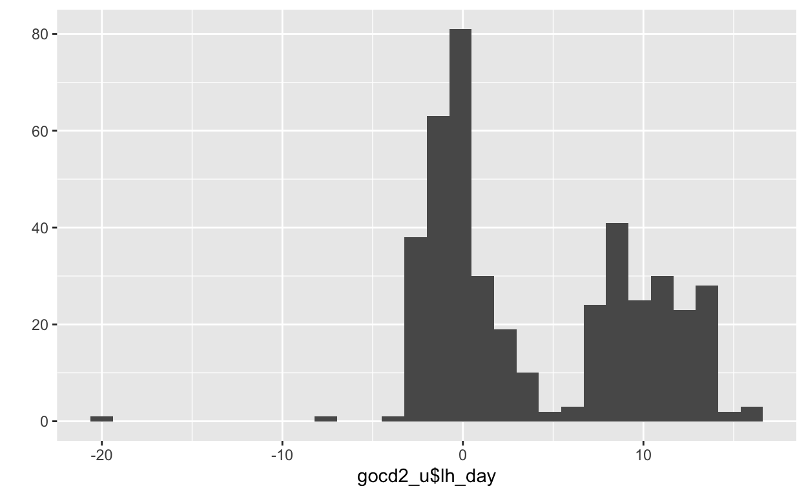
FALSE TRUE
581 47 min(gocd2$estradiol,na.rm=T)[1] 0.1522859min(gocd2$estradiol_lcms,na.rm=T)[1] 2.13qplot(gocd2$estradiol_lcms,na.rm=T) + scale_x_log10()`stat_bin()` using `bins = 30`. Pick better value `binwidth`.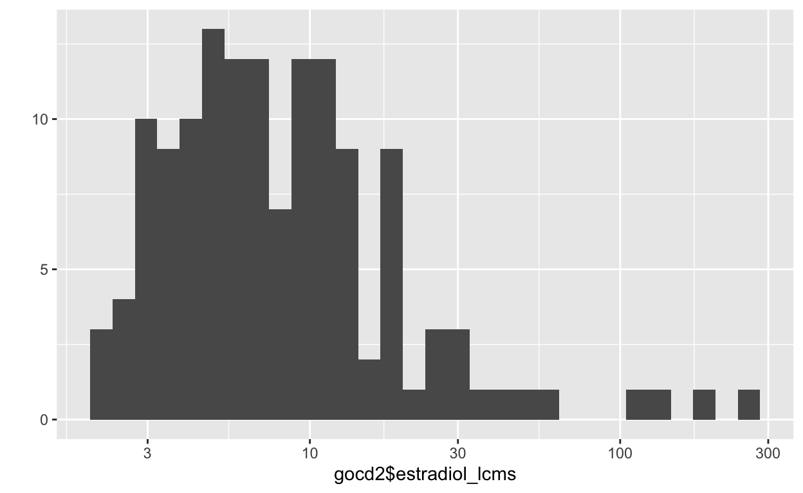
cor.test(gocd2$estradiol_lcms, gocd2$estradiol)
Pearson's product-moment correlation
data: gocd2$estradiol_lcms and gocd2$estradiol
t = 0.70509, df = 129, p-value = 0.482
alternative hypothesis: true correlation is not equal to 0
95 percent confidence interval:
-0.1107421 0.2310304
sample estimates:
cor
0.06196029 gocd2 <- gocd2 %>%
mutate(
estradiol_cens = if_else(estradiol <= 0.3, "left", "none"),
estradiol = if_else(estradiol_cens == "left", 0.3, estradiol),
estradiol_lcms = if_else(!is.na(estradiol_lcms) | is.na(estradiol), estradiol_lcms, 1),
estradiol_lcms_cens = if_else(estradiol_lcms <= 1, "left", "none")
) %>%
mutate(
progesterone_cens = if_else(progesterone <= 0, "left", "none"),
progesterone = if_else(progesterone_cens == "left", 0, progesterone)
)
cor.test(gocd2$estradiol_lcms, gocd2$estradiol)
Pearson's product-moment correlation
data: gocd2$estradiol_lcms and gocd2$estradiol
t = 1.3218, df = 594, p-value = 0.1868
alternative hypothesis: true correlation is not equal to 0
95 percent confidence interval:
-0.02627335 0.13388408
sample estimates:
cor
0.05415365 table(gocd2$estradiol_lcms_cens)
left none
465 139 is.na(estradiol)
is.na(progesterone) FALSE TRUE
FALSE 552 29
TRUE 44 3 is.na(estradiol)
estradiol_cens FALSE TRUE
left 3 0
none 593 0
<NA> 0 32n_distinct(gocd2$id)[1] 157qplot(data = gocd2, estradiol, fill = estradiol_cens)`stat_bin()` using `bins = 30`. Pick better value `binwidth`.Warning: Removed 32 rows containing non-finite outside the scale range
(`stat_bin()`).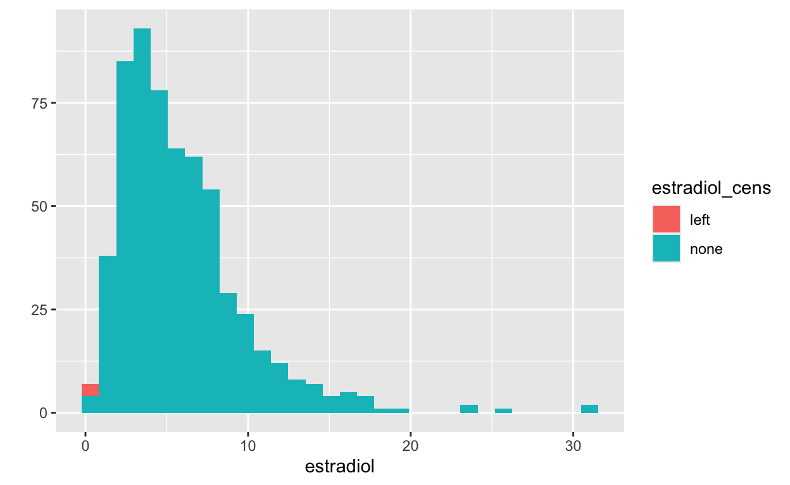
saveRDS(gocd2, "gocd2.rds")gocd2 %>% select(estradiol, estradiol_lcms) %>% summarise_all(funs(mean = mean(., na.rm=T), sd = sd(., na.rm=T), logmean = mean(log(.), na.rm=T), logsd = sd(log(.), na.rm=T))) %>% knitr::kable()Warning: `funs()` was deprecated in dplyr 0.8.0.
ℹ Please use a list of either functions or lambdas:
# Simple named list: list(mean = mean, median = median)
# Auto named with `tibble::lst()`: tibble::lst(mean, median)
# Using lambdas list(~ mean(., trim = .2), ~ median(., na.rm = TRUE))
Call `lifecycle::last_lifecycle_warnings()` to see where this warning
was generated.| estradiol_mean | estradiol_lcms_mean | estradiol_sd | estradiol_lcms_sd | estradiol_logmean | estradiol_lcms_logmean | estradiol_logsd | estradiol_lcms_logsd |
|---|---|---|---|---|---|---|---|
| 5.880166 | 4.096589 | 3.928555 | 15.39471 | 1.568171 | 0.4829841 | 0.6666086 | 0.9771497 |
ggplot(gocd2, aes(estradiol, estradiol_lcms)) + geom_point() + geom_abline(slope = 1, intercept = 0) + coord_equal(xlim = c(0,45), ylim = c(0,45))Warning: Removed 32 rows containing missing values or values outside the scale
range (`geom_point()`).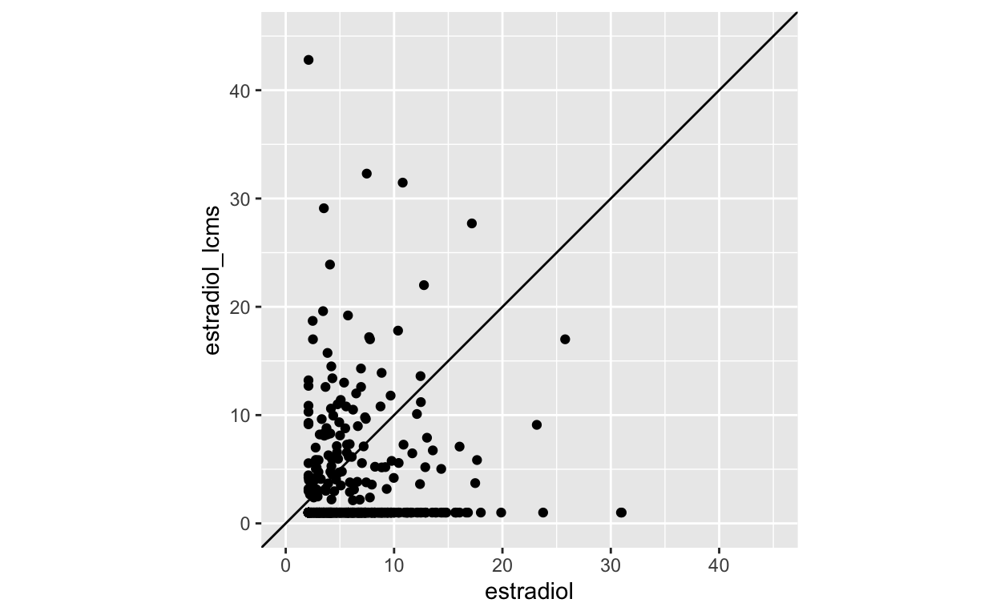
cor.test(gocd2$estradiol, gocd2$estradiol_lcms)
Pearson's product-moment correlation
data: gocd2$estradiol and gocd2$estradiol_lcms
t = 1.3218, df = 594, p-value = 0.1868
alternative hypothesis: true correlation is not equal to 0
95 percent confidence interval:
-0.02627335 0.13388408
sample estimates:
cor
0.05415365
Pearson's product-moment correlation
data: log(gocd2$estradiol) and log(gocd2$estradiol_lcms)
t = 1.5589, df = 594, p-value = 0.1195
alternative hypothesis: true correlation is not equal to 0
95 percent confidence interval:
-0.01656408 0.14341107
sample estimates:
cor
0.06383356 ggplot(gocd2, aes(estradiol, estradiol_lcms)) + scale_x_log10() + scale_y_log10() + geom_point()Warning: Removed 32 rows containing missing values or values outside the scale
range (`geom_point()`).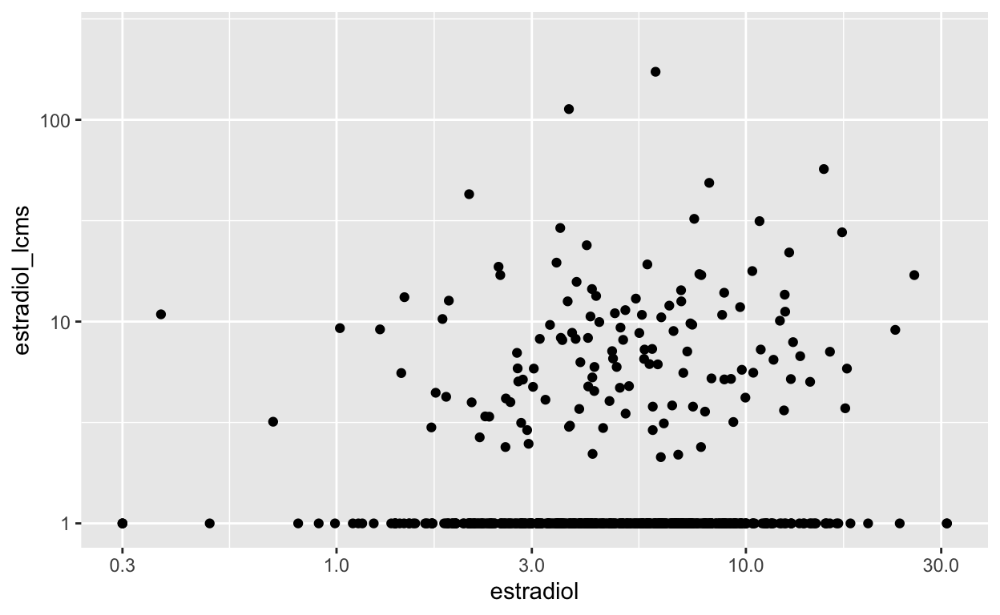
source("0_summary_functions.R")Loading required package: RcppLoading 'brms' package (version 2.23.0). Useful instructions
can be found by typing help('brms'). A more detailed introduction
to the package is available through vignette('brms_overview').
Attaching package: 'brms'The following object is masked from 'package:stats':
arWarning: package 'gt' was built under R version 4.5.2export_anon("juenger2018", gocd2)df <- gocd2 %>% select(id, cycle, bc_day, fc_day, lh_day, hormone = progesterone, hormone_cens = progesterone_cens, cycle_length, age, partner)
summarise_hormone(df = df, Dataset = "GOCD2", Hormone = "Progesterone", Method = "Salivary liquid chromatography–mass spectrometry",
Citation = "Jünger, J., Kordsmeyer, T. L., Gerlach, T. M., & Penke, L. (2018). Fertile women evaluate male bodies as more attractive, regardless of masculinity. Evolution and Human Behavior: Official Journal of the Human Behavior and Evolution Society, 39(4), 412–423. https://doi.org/10.1016/j.evolhumbehav.2018.03.007",
LOQ = 5,
CV_intra = 10.8,
CV_inter = 9.7,
Procedure = "Next, the saliva samples were collected via passive drool. For hormone assays, we collected four saliva samples from each participant (one per testing session). Contamination of saliva samples was minimized by asking participants to abstain from eating, drinking (except plain water), smoking, chewing gum or brushing teeth for at least one hour before each session. The samples were stored at -80°C directly after collection until shipment on dry ice to the Kirschbaum Lab at Technical University of Dresden, Germany, where estradiol, progesterone, testosterone and cortisol was assessed via liquid chromatography mass spectrometry (LCMS; Gao, Stalder, & Kirschbaum, 2015). Since the LCMS analysis of the estradiol levels did only detect 22% of all possible values, the samples were reanalyzed using the highly sensitive 17β-estradiol enzyme immunoassay kit (IBL International, Hamburg, Germany). These latter estradiol values were used in subsequent analyses. ",
Scheduling = "Peri-ovulatory & Luteal 'Sessions two to five, the computer-based testing sessions, took place across two ovulatory cycles per participant, once per cycle during the fertile and once during the luteal phase. To control for possible effects of diurnal changes in hormone levels (Bao et al., 2003; Veldhuis et al., 1988), all sessions took place in the second half of the day (mainly between 11.30 am and 6 pm).'",
LH_test = "highly sensitive (10 mIU/ml) urine ovulation test strips from purbay®, which measure the luteinizing hormone (LH). These LH-tests had to be done at home at the estimated day of ovulation and the four days prior to that and results were self- reported by the participants.")`summarise()` has regrouped the output.
Joining with `by = join_by(bc_day)`
`summarise()` has regrouped the output.
Loading required namespace: rstan
ℹ Summaries were computed grouped by id and cycle.
ℹ Output is grouped by id.
ℹ Use `summarise(.groups = "drop_last")` to silence this message.
ℹ Use `summarise(.by = c(id, cycle))` for per-operation grouping
(`?dplyr::dplyr_by`) instead.Warning: Results may not be meaningful for censored models.
Warning: Results may not be meaningful for censored models.Warning: Rows containing NAs were excluded from the model.
Warning: Rows containing NAs were excluded from the model.Recomputing 'bayes_R2'Warning: Results may not be meaningful for censored models.Warning: Results may not be meaningful for censored models.Warning: `aes_string()` was deprecated in ggplot2 3.0.0.
ℹ Please use tidy evaluation idioms with `aes()`.
ℹ See also `vignette("ggplot2-in-packages")` for more information.
This warning is displayed once per session.
Call `lifecycle::last_lifecycle_warnings()` to see where this warning
was generated.Recomputing 'bayes_R2'Warning: Results may not be meaningful for censored models.Warning: Results may not be meaningful for censored models.Recomputing 'bayes_R2'Warning: Results may not be meaningful for censored models.
Warning: Results may not be meaningful for censored models.$Dataset
[1] "GOCD2"
$Citation
[1] "Jünger, J., Kordsmeyer, T. L., Gerlach, T. M., & Penke, L. (2018). Fertile women evaluate male bodies as more attractive, regardless of masculinity. Evolution and Human Behavior: Official Journal of the Human Behavior and Evolution Society, 39(4), 412–423. https://doi.org/10.1016/j.evolhumbehav.2018.03.007"
$Hormone
[1] "Progesterone"
$Method
[1] "Salivary liquid chromatography–mass spectrometry"
$`Limit of detection`
[1] NA
$LOQ
[1] 5
$`Intraassay CV`
[1] 10.8
$`Interassay CV`
[1] 9.7
$Procedure
[1] "Next, the saliva samples were collected via passive drool. For hormone assays, we collected four saliva samples from each participant (one per testing session). Contamination of saliva samples was minimized by asking participants to abstain from eating, drinking (except plain water), smoking, chewing gum or brushing teeth for at least one hour before each session. The samples were stored at -80°C directly after collection until shipment on dry ice to the Kirschbaum Lab at Technical University of Dresden, Germany, where estradiol, progesterone, testosterone and cortisol was assessed via liquid chromatography mass spectrometry (LCMS; Gao, Stalder, & Kirschbaum, 2015). Since the LCMS analysis of the estradiol levels did only detect 22% of all possible values, the samples were reanalyzed using the highly sensitive 17β-estradiol enzyme immunoassay kit (IBL International, Hamburg, Germany). These latter estradiol values were used in subsequent analyses. "
$Scheduling
[1] "Peri-ovulatory & Luteal 'Sessions two to five, the computer-based testing sessions, took place across two ovulatory cycles per participant, once per cycle during the fertile and once during the luteal phase. To control for possible effects of diurnal changes in hormone levels (Bao et al., 2003; Veldhuis et al., 1988), all sessions took place in the second half of the day (mainly between 11.30 am and 6 pm).'"
$LH_test
[1] "highly sensitive (10 mIU/ml) urine ovulation test strips from purbay®, which measure the luteinizing hormone (LH). These LH-tests had to be done at home at the estimated day of ovulation and the four days prior to that and results were self- reported by the participants."
$distribution`stat_bin()` using `bins = 30`. Pick better value `binwidth`.Warning: Removed 47 rows containing non-finite outside the scale range
(`stat_bin()`).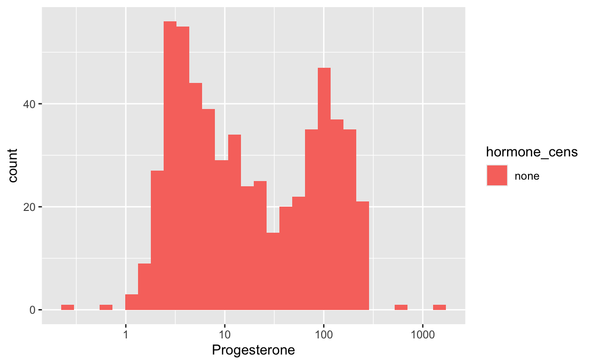
$mean
[1] 53.71826
$logmean
[1] 2.874682
$logsd
[1] 1.588518
$median
[1] 13.5
$sd
[1] 91.17017
$mad
[1] 16.11586
$range
[1] "0.26, 1480.00"
$missing
[1] 47
$outliers
[1] 0
$censored
[1] 0
$n_women
[1] 157
$n_cycles
[1] 398
$n_days
[1] 628
$age
[1] "23.2±3.45"
$in_relationship
[1] "48%"
$cycle_length
[1] "29.5±6.54"
$usable_n
[1] 537
$usable_n_women
[1] 156
$no_lh_surge_woman
[1] "10/124 (8%)"
$no_lh_surge_cycle
[1] "59/240 (25%)"
$var_id_loo
[1] "-0.01 [-0.01;-0.00]"
$var_cycle_loo
[1] "-0.01 [-0.02;-0.01]"
$var_id
[1] "0.11 [0.00;0.28] (1%)"
$var_cycle
[1] "0.09 [0.00;0.25] (0%)"
$var_resid
[1] "1.59 [1.50;1.69] (99%)"
$bc_day_model
Family: gaussian
Links: mu = identity
Formula: log(hormone) | cens(hormone_cens) ~ s(bc_day) + (1 | id) + (1 | id:cycle)
Data: df (Number of observations: 532)
Draws: 4 chains, each with iter = 2000; warmup = 1000; thin = 1;
total post-warmup draws = 4000
Smoothing Spline Hyperparameters:
Estimate Est.Error l-95% CI u-95% CI Rhat Bulk_ESS
sds(sbc_day_1) 4.96 1.42 2.94 8.40 1.00 1587
Tail_ESS
sds(sbc_day_1) 2477
Multilevel Hyperparameters:
~id (Number of levels: 156)
Estimate Est.Error l-95% CI u-95% CI Rhat Bulk_ESS
sd(Intercept) 0.50 0.07 0.37 0.63 1.00 1180
Tail_ESS
sd(Intercept) 1910
~id:cycle (Number of levels: 350)
Estimate Est.Error l-95% CI u-95% CI Rhat Bulk_ESS
sd(Intercept) 0.11 0.08 0.00 0.29 1.01 934
Tail_ESS
sd(Intercept) 1584
Regression Coefficients:
Estimate Est.Error l-95% CI u-95% CI Rhat Bulk_ESS Tail_ESS
Intercept 2.91 0.06 2.80 3.02 1.00 3155 3191
sbc_day_1 -5.07 4.82 -14.59 4.54 1.00 2294 2226
Further Distributional Parameters:
Estimate Est.Error l-95% CI u-95% CI Rhat Bulk_ESS Tail_ESS
sigma 0.94 0.04 0.87 1.02 1.00 2557 2911
Draws were sampled using sample(hmc). For each parameter, Bulk_ESS
and Tail_ESS are effective sample size measures, and Rhat is the potential
scale reduction factor on split chains (at convergence, Rhat = 1).
$r_bc
[1] "0.75 [0.72;0.77]"
$rmse_bc
[1] "1.43 [1.34;1.51]"
$r_loo_bc
[1] "0.73 [0.68;0.77]"
$r_bc_stirn
[1] "-0.42 [-0.49;-0.35]"
$r_log_bc_stirn
[1] "-0.67 [-0.72;-0.62]"
$r_diff_bc_stirn
[1] "-0.46 [-0.52;-0.39]"
$r_log_diff_bc_stirn
[1] "-0.66 [-0.70;-0.61]"
$r_bc_imputed
[1] " 0.74 [ 0.69; 0.77]"
$r_diff_bc_imputed
[1] " 0.68 [ 0.63; 0.72]"
$sd_bc_imputed
[1] "1.27 (101%)"
$r_diff_bc_imputed_rr
[1] " 0.68 [ 0.63; 0.72]"
$imputed_bc_vs_measured_graphWarning: Removed 8 rows containing missing values or values outside the scale
range (`geom_smooth()`).Warning: Removed 8 rows containing missing values or values outside the scale
range (`geom_point()`).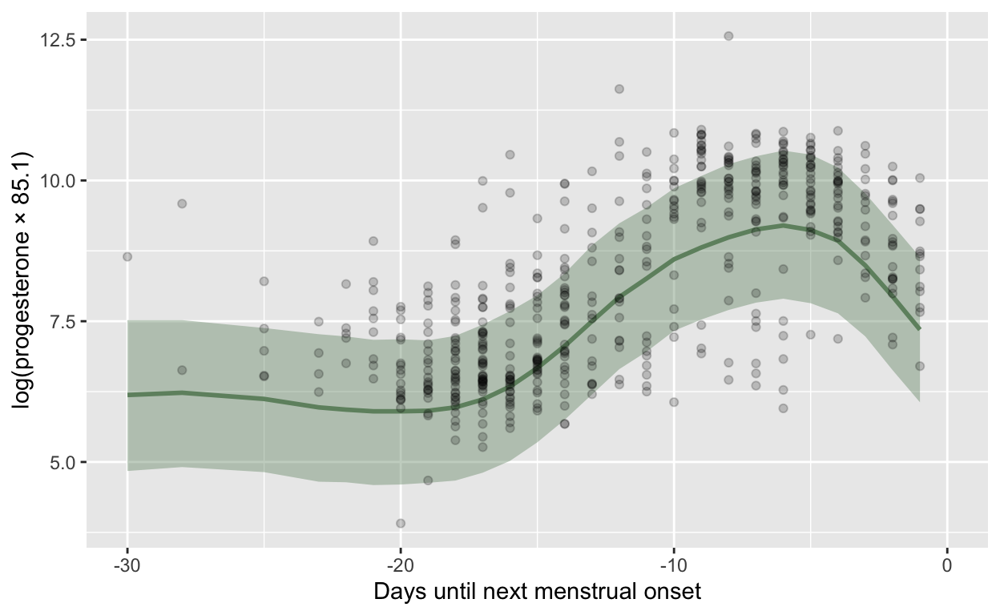
$rmse_bc_imputed
[1] " 1.09"
$fc_day_model
Family: gaussian
Links: mu = identity
Formula: log(hormone) | cens(hormone_cens) ~ s(fc_day) + (1 | id) + (1 | id:cycle)
Data: df (Number of observations: 368)
Draws: 4 chains, each with iter = 2000; warmup = 1000; thin = 1;
total post-warmup draws = 4000
Smoothing Spline Hyperparameters:
Estimate Est.Error l-95% CI u-95% CI Rhat Bulk_ESS
sds(sfc_day_1) 3.71 1.14 2.05 6.44 1.00 2684
Tail_ESS
sds(sfc_day_1) 2658
Multilevel Hyperparameters:
~id (Number of levels: 124)
Estimate Est.Error l-95% CI u-95% CI Rhat Bulk_ESS
sd(Intercept) 0.41 0.11 0.17 0.60 1.00 609
Tail_ESS
sd(Intercept) 757
~id:cycle (Number of levels: 240)
Estimate Est.Error l-95% CI u-95% CI Rhat Bulk_ESS
sd(Intercept) 0.11 0.09 0.01 0.32 1.00 1350
Tail_ESS
sd(Intercept) 1936
Regression Coefficients:
Estimate Est.Error l-95% CI u-95% CI Rhat Bulk_ESS Tail_ESS
Intercept 2.81 0.07 2.68 2.94 1.00 5253 3147
sfc_day_1 -7.60 5.22 -18.03 2.27 1.00 2875 2715
Further Distributional Parameters:
Estimate Est.Error l-95% CI u-95% CI Rhat Bulk_ESS Tail_ESS
sigma 1.02 0.05 0.93 1.12 1.00 2021 2239
Draws were sampled using sample(hmc). For each parameter, Bulk_ESS
and Tail_ESS are effective sample size measures, and Rhat is the potential
scale reduction factor on split chains (at convergence, Rhat = 1).
$r_fc
[1] "0.71 [0.68;0.74]"
$rmse_fc
[1] "1.50 [1.39;1.62]"
$r_loo_fc
[1] "0.70 [0.63;0.74]"
$r_fc_stirn
[1] "-0.54 [-0.61;-0.46]"
$r_log_fc_stirn
[1] "-0.65 [-0.71;-0.59]"
$r_diff_fc_stirn
[1] "-0.51 [-0.58;-0.43]"
$r_log_diff_fc_stirn
[1] "-0.60 [-0.67;-0.53]"
$r_fc_imputed
[1] " 0.67 [ 0.61; 0.72]"
$r_diff_fc_imputed
[1] " 0.61 [ 0.54; 0.67]"
$sd_fc_imputed
[1] "1.05 (81%)"
$r_diff_fc_imputed_rr
[1] " 0.65 [ 0.58; 0.71]"
$imputed_fc_vs_measured_graphWarning: Removed 170 rows containing missing values or values outside the
scale range (`geom_smooth()`).Warning: Removed 170 rows containing missing values or values outside the
scale range (`geom_point()`).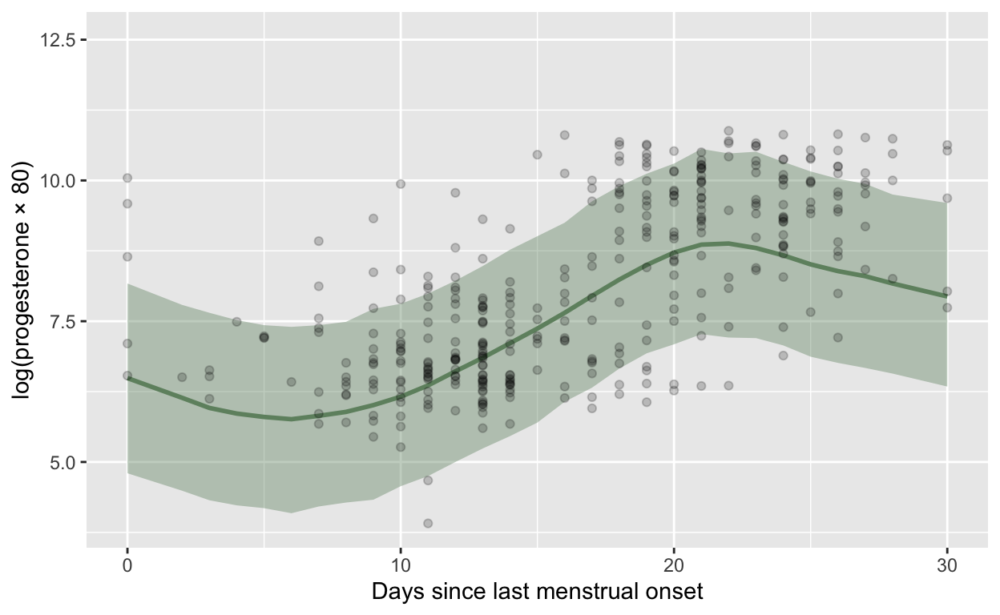
$rmse_fc_imputed
[1] " 1.21"
$lh_day_model
Family: gaussian
Links: mu = identity
Formula: log(hormone) | cens(hormone_cens) ~ s(lh_day) + (1 | id) + (1 | id:cycle)
Data: df %>% filter(between(lh_day, -15, 15)) (Number of observations: 412)
Draws: 4 chains, each with iter = 2000; warmup = 1000; thin = 1;
total post-warmup draws = 4000
Smoothing Spline Hyperparameters:
Estimate Est.Error l-95% CI u-95% CI Rhat Bulk_ESS
sds(slh_day_1) 2.38 0.98 1.03 4.81 1.00 2123
Tail_ESS
sds(slh_day_1) 2550
Multilevel Hyperparameters:
~id (Number of levels: 143)
Estimate Est.Error l-95% CI u-95% CI Rhat Bulk_ESS
sd(Intercept) 0.32 0.12 0.04 0.53 1.01 626
Tail_ESS
sd(Intercept) 628
~id:cycle (Number of levels: 247)
Estimate Est.Error l-95% CI u-95% CI Rhat Bulk_ESS
sd(Intercept) 0.12 0.09 0.00 0.33 1.01 905
Tail_ESS
sd(Intercept) 1277
Regression Coefficients:
Estimate Est.Error l-95% CI u-95% CI Rhat Bulk_ESS Tail_ESS
Intercept 2.76 0.06 2.64 2.88 1.00 4472 3413
slh_day_1 -0.34 4.03 -8.64 7.20 1.00 2485 2354
Further Distributional Parameters:
Estimate Est.Error l-95% CI u-95% CI Rhat Bulk_ESS Tail_ESS
sigma 1.08 0.05 0.99 1.17 1.00 1690 2647
Draws were sampled using sample(hmc). For each parameter, Bulk_ESS
and Tail_ESS are effective sample size measures, and Rhat is the potential
scale reduction factor on split chains (at convergence, Rhat = 1).
$r_lh
[1] "0.70 [0.67;0.73]"
$rmse_lh
[1] "1.57 [1.46;1.68]"
$r_loo_lh
[1] "0.69 [0.63;0.74]"
$r_prob_lh
[1] "-0.38 [-0.46;-0.29]"
$r_log_prob_lh
[1] "-0.60 [-0.66;-0.54]"
$r_diff_prob_lh
[1] "-0.44 [-0.51;-0.36]"
$r_log_diff_prob_lh
[1] "-0.63 [-0.69;-0.57]"
$r_lh_imputed
[1] " 0.62 [ 0.56; 0.68]"
$r_diff_lh_imputed
[1] " 0.64 [ 0.58; 0.70]"
$sd_lh_imputed
[1] "1.09 (66%)"
$r_diff_lh_imputed_rr
[1] " 0.72 [ 0.66; 0.77]"
$imputed_lh_vs_measured_graphWarning: Removed 125 rows containing missing values or values outside the
scale range (`geom_smooth()`).Warning: Removed 125 rows containing missing values or values outside the
scale range (`geom_point()`).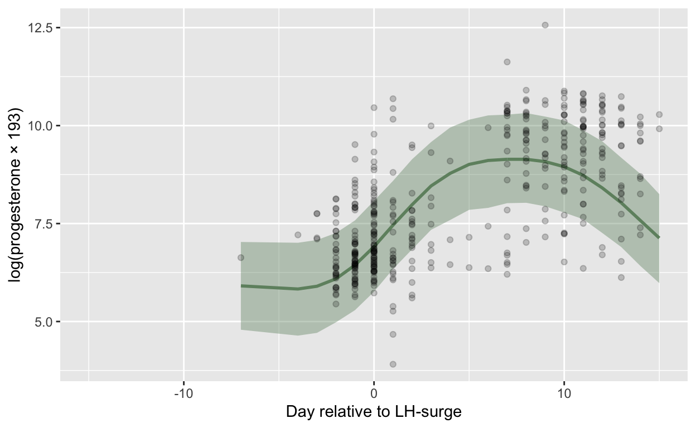
$rmse_lh_imputed
[1] " 1.29"df <- gocd2%>% select(id, cycle, bc_day, fc_day, lh_day, hormone = estradiol, hormone_cens = estradiol_cens, cycle_length, age, partner)
summarise_hormone(df = df, Dataset = "GOCD2",
Hormone = "Estradiol",
Method = "Salivary immunoassay (IBL)",
Citation = "Jünger, J., Kordsmeyer, T. L., Gerlach, T. M., & Penke, L. (2018). Fertile women evaluate male bodies as more attractive, regardless of masculinity. Evolution and Human Behavior: Official Journal of the Human Behavior and Evolution Society, 39(4), 412–423. https://doi.org/10.1016/j.evolhumbehav.2018.03.007",
LOD = 0.3,
LOQ = 0.9,
CV_intra = 9.7,
CV_inter = 11.3,
Procedure = "Next, the saliva samples were collected via passive drool. For hormone assays, we collected four saliva samples from each participant (one per testing session). Contamination of saliva samples was minimized by asking participants to abstain from eating, drinking (except plain water), smoking, chewing gum or brushing teeth for at least one hour before each session. The samples were stored at -80°C directly after collection until shipment on dry ice to the Kirschbaum Lab at Technical University of Dresden, Germany, where estradiol, progesterone, testosterone and cortisol was assessed via liquid chromatography mass spectrometry (LCMS; Gao, Stalder, & Kirschbaum, 2015). Since the LCMS analysis of the estradiol levels did only detect 22% of all possible values, the samples were reanalyzed using the highly sensitive 17β-estradiol enzyme immunoassay kit (IBL International, Hamburg, Germany). These latter estradiol values were used in subsequent analyses. ",
Scheduling = "Peri-ovulatory & Luteal 'Sessions two to five, the computer-based testing sessions, took place across two ovulatory cycles per participant, once per cycle during the fertile and once during the luteal phase. To control for possible effects of diurnal changes in hormone levels (Bao et al., 2003; Veldhuis et al., 1988), all sessions took place in the second half of the day (mainly between 11.30 am and 6 pm).'",
LH_test = "highly sensitive (10 mIU/ml) urine ovulation test strips from purbay®, which measure the luteinizing hormone (LH). These LH-tests had to be done at home at the estimated day of ovulation and the four days prior to that and results were self- reported by the participants.")`summarise()` has regrouped the output.
Joining with `by = join_by(bc_day)`
`summarise()` has regrouped the output.
ℹ Summaries were computed grouped by id and cycle.
ℹ Output is grouped by id.
ℹ Use `summarise(.groups = "drop_last")` to silence this message.
ℹ Use `summarise(.by = c(id, cycle))` for per-operation grouping
(`?dplyr::dplyr_by`) instead.Warning: Results may not be meaningful for censored models.Warning: Results may not be meaningful for censored models.Warning: Rows containing NAs were excluded from the model.
Warning: Rows containing NAs were excluded from the model.Recomputing 'bayes_R2'Warning: Results may not be meaningful for censored models.Warning: Results may not be meaningful for censored models.Warning in sqrt(r2[, "Estimate"]): NaNs producedWarning in sqrt(r2[, "Q2.5"]): NaNs producedWarning in sqrt(r2[, "Q97.5"]): NaNs producedRecomputing 'bayes_R2'Warning: Results may not be meaningful for censored models.Warning: Results may not be meaningful for censored models.Warning in sqrt(r2[, "Estimate"]): NaNs producedWarning in sqrt(r2[, "Q2.5"]): NaNs producedRecomputing 'bayes_R2'Warning: Results may not be meaningful for censored models.Warning: Results may not be meaningful for censored models.Warning in sqrt(r2[, "Estimate"]): NaNs producedWarning in sqrt(r2[, "Q2.5"]): NaNs producedWarning in sqrt(r2[, "Q97.5"]): NaNs produced$Dataset
[1] "GOCD2"
$Citation
[1] "Jünger, J., Kordsmeyer, T. L., Gerlach, T. M., & Penke, L. (2018). Fertile women evaluate male bodies as more attractive, regardless of masculinity. Evolution and Human Behavior: Official Journal of the Human Behavior and Evolution Society, 39(4), 412–423. https://doi.org/10.1016/j.evolhumbehav.2018.03.007"
$Hormone
[1] "Estradiol"
$Method
[1] "Salivary immunoassay (IBL)"
$`Limit of detection`
[1] 0.3
$LOQ
[1] 0.9
$`Intraassay CV`
[1] 9.7
$`Interassay CV`
[1] 11.3
$Procedure
[1] "Next, the saliva samples were collected via passive drool. For hormone assays, we collected four saliva samples from each participant (one per testing session). Contamination of saliva samples was minimized by asking participants to abstain from eating, drinking (except plain water), smoking, chewing gum or brushing teeth for at least one hour before each session. The samples were stored at -80°C directly after collection until shipment on dry ice to the Kirschbaum Lab at Technical University of Dresden, Germany, where estradiol, progesterone, testosterone and cortisol was assessed via liquid chromatography mass spectrometry (LCMS; Gao, Stalder, & Kirschbaum, 2015). Since the LCMS analysis of the estradiol levels did only detect 22% of all possible values, the samples were reanalyzed using the highly sensitive 17β-estradiol enzyme immunoassay kit (IBL International, Hamburg, Germany). These latter estradiol values were used in subsequent analyses. "
$Scheduling
[1] "Peri-ovulatory & Luteal 'Sessions two to five, the computer-based testing sessions, took place across two ovulatory cycles per participant, once per cycle during the fertile and once during the luteal phase. To control for possible effects of diurnal changes in hormone levels (Bao et al., 2003; Veldhuis et al., 1988), all sessions took place in the second half of the day (mainly between 11.30 am and 6 pm).'"
$LH_test
[1] "highly sensitive (10 mIU/ml) urine ovulation test strips from purbay®, which measure the luteinizing hormone (LH). These LH-tests had to be done at home at the estimated day of ovulation and the four days prior to that and results were self- reported by the participants."
$distribution`stat_bin()` using `bins = 30`. Pick better value `binwidth`.Warning: Removed 32 rows containing non-finite outside the scale range
(`stat_bin()`).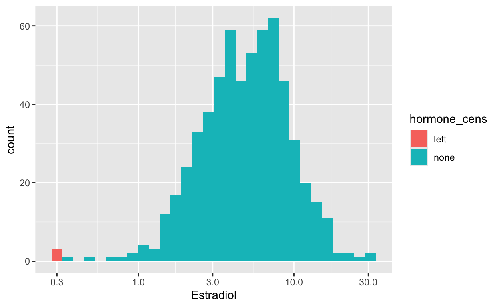
$mean
[1] 5.880166
$logmean
[1] 1.568171
$logsd
[1] 0.6666086
$median
[1] 5.004458
$sd
[1] 3.928555
$mad
[1] 3.126347
$range
[1] "0.30, 31.00"
$missing
[1] 32
$outliers
[1] 0
$censored
[1] 3
$n_women
[1] 157
$n_cycles
[1] 398
$n_days
[1] 628
$age
[1] "23.2±3.45"
$in_relationship
[1] "48%"
$cycle_length
[1] "29.5±6.54"
$usable_n
[1] 549
$usable_n_women
[1] 157
$no_lh_surge_woman
[1] "9/125 (7%)"
$no_lh_surge_cycle
[1] "57/243 (23%)"
$var_id_loo
[1] "0.14 [0.08;0.19]"
$var_cycle_loo
[1] "0.14 [0.08;0.19]"
$var_id
[1] "0.35 [0.27;0.43] (27%)"
$var_cycle
[1] "0.13 [0.01;0.28] (5%)"
$var_resid
[1] "0.55 [0.51;0.60] (68%)"
$bc_day_modelWarning: There were 3 divergent transitions after warmup. Increasing
adapt_delta above 0.99 may help. See
http://mc-stan.org/misc/warnings.html#divergent-transitions-after-warmup Family: gaussian
Links: mu = identity
Formula: log(hormone) | cens(hormone_cens) ~ s(bc_day) + (1 | id) + (1 | id:cycle)
Data: df (Number of observations: 543)
Draws: 4 chains, each with iter = 2000; warmup = 1000; thin = 1;
total post-warmup draws = 4000
Smoothing Spline Hyperparameters:
Estimate Est.Error l-95% CI u-95% CI Rhat Bulk_ESS
sds(sbc_day_1) 0.53 0.38 0.06 1.54 1.00 1408
Tail_ESS
sds(sbc_day_1) 1503
Multilevel Hyperparameters:
~id (Number of levels: 157)
Estimate Est.Error l-95% CI u-95% CI Rhat Bulk_ESS
sd(Intercept) 0.35 0.04 0.27 0.42 1.00 1093
Tail_ESS
sd(Intercept) 1576
~id:cycle (Number of levels: 356)
Estimate Est.Error l-95% CI u-95% CI Rhat Bulk_ESS
sd(Intercept) 0.13 0.08 0.01 0.27 1.01 316
Tail_ESS
sd(Intercept) 740
Regression Coefficients:
Estimate Est.Error l-95% CI u-95% CI Rhat Bulk_ESS Tail_ESS
Intercept 1.57 0.04 1.50 1.64 1.00 2342 2591
sbc_day_1 0.09 1.05 -2.22 2.14 1.00 1928 1956
Further Distributional Parameters:
Estimate Est.Error l-95% CI u-95% CI Rhat Bulk_ESS Tail_ESS
sigma 0.55 0.02 0.50 0.60 1.00 992 1491
Draws were sampled using sample(hmc). For each parameter, Bulk_ESS
and Tail_ESS are effective sample size measures, and Rhat is the potential
scale reduction factor on split chains (at convergence, Rhat = 1).
$r_bc
[1] "0.11 [0.03;0.18]"
$rmse_bc
[1] "0.86 [0.81;0.91]"
$r_loo_bc
[1] "NaN [NaN;NaN]"
$r_bc_stirn
[1] " 0.03 [-0.06; 0.11]"
$r_log_bc_stirn
[1] " 0.04 [-0.05; 0.12]"
$r_diff_bc_stirn
[1] "-0.04 [-0.13; 0.04]"
$r_log_diff_bc_stirn
[1] "-0.03 [-0.11; 0.05]"
$r_bc_imputed
[1] " 0.10 [ 0.01; 0.18]"
$r_diff_bc_imputed
[1] " 0.12 [ 0.03; 0.20]"
$sd_bc_imputed
[1] "0.40 (41%)"
$r_diff_bc_imputed_rr
[1] " 0.18 [ 0.05; 0.31]"
$imputed_bc_vs_measured_graphWarning: Removed 9 rows containing missing values or values outside the scale
range (`geom_smooth()`).Warning: Removed 9 rows containing missing values or values outside the scale
range (`geom_point()`).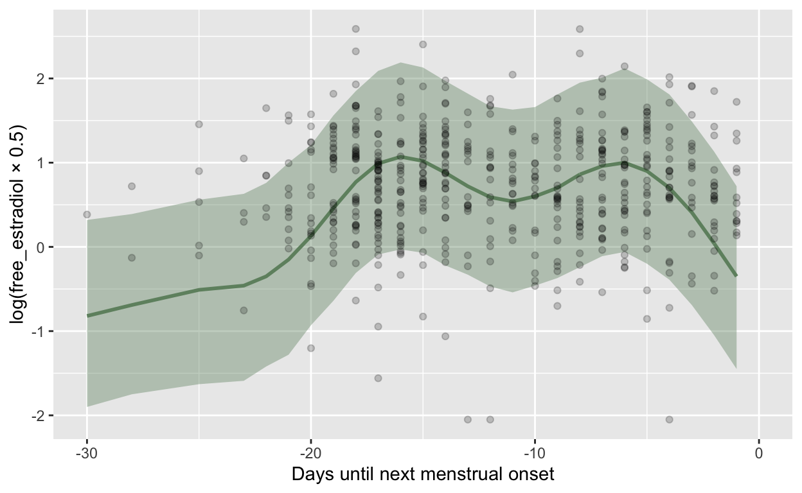
$rmse_bc_imputed
[1] " 0.77"
$fc_day_model
Family: gaussian
Links: mu = identity
Formula: log(hormone) | cens(hormone_cens) ~ s(fc_day) + (1 | id) + (1 | id:cycle)
Data: df (Number of observations: 374)
Draws: 4 chains, each with iter = 2000; warmup = 1000; thin = 1;
total post-warmup draws = 4000
Smoothing Spline Hyperparameters:
Estimate Est.Error l-95% CI u-95% CI Rhat Bulk_ESS
sds(sfc_day_1) 0.86 0.64 0.08 2.48 1.01 1267
Tail_ESS
sds(sfc_day_1) 1571
Multilevel Hyperparameters:
~id (Number of levels: 125)
Estimate Est.Error l-95% CI u-95% CI Rhat Bulk_ESS
sd(Intercept) 0.36 0.05 0.27 0.45 1.00 1434
Tail_ESS
sd(Intercept) 2370
~id:cycle (Number of levels: 243)
Estimate Est.Error l-95% CI u-95% CI Rhat Bulk_ESS
sd(Intercept) 0.10 0.07 0.00 0.26 1.01 547
Tail_ESS
sd(Intercept) 1185
Regression Coefficients:
Estimate Est.Error l-95% CI u-95% CI Rhat Bulk_ESS Tail_ESS
Intercept 1.55 0.05 1.46 1.64 1.00 3648 3134
sfc_day_1 0.73 1.75 -3.03 4.08 1.00 3313 1904
Further Distributional Parameters:
Estimate Est.Error l-95% CI u-95% CI Rhat Bulk_ESS Tail_ESS
sigma 0.55 0.03 0.50 0.61 1.00 2305 2785
Draws were sampled using sample(hmc). For each parameter, Bulk_ESS
and Tail_ESS are effective sample size measures, and Rhat is the potential
scale reduction factor on split chains (at convergence, Rhat = 1).
$r_fc
[1] "0.14 [0.04;0.23]"
$rmse_fc
[1] "0.86 [0.81;0.93]"
$r_loo_fc
[1] "NaN [NaN;0.07]"
$r_fc_stirn
[1] "-0.05 [-0.15; 0.05]"
$r_log_fc_stirn
[1] "-0.00 [-0.11; 0.10]"
$r_diff_fc_stirn
[1] "-0.08 [-0.18; 0.02]"
$r_log_diff_fc_stirn
[1] "-0.01 [-0.11; 0.09]"
$r_fc_imputed
[1] " 0.10 [-0.01; 0.20]"
$r_diff_fc_imputed
[1] " 0.12 [ 0.02; 0.22]"
$sd_fc_imputed
[1] "0.31 (36%)"
$r_diff_fc_imputed_rr
[1] " 0.20 [ 0.04; 0.35]"
$imputed_fc_vs_measured_graphWarning: Removed 176 rows containing missing values or values outside the
scale range (`geom_smooth()`).Warning: Removed 176 rows containing missing values or values outside the
scale range (`geom_point()`).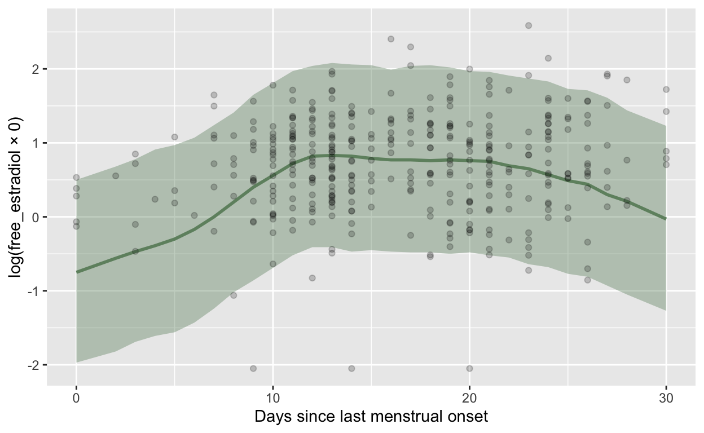
$rmse_fc_imputed
[1] " 0.71"
$lh_day_modelWarning: There were 1 divergent transitions after warmup. Increasing
adapt_delta above 0.99 may help. See
http://mc-stan.org/misc/warnings.html#divergent-transitions-after-warmup Family: gaussian
Links: mu = identity
Formula: log(hormone) | cens(hormone_cens) ~ s(lh_day) + (1 | id) + (1 | id:cycle)
Data: df %>% filter(between(lh_day, -15, 15)) (Number of observations: 426)
Draws: 4 chains, each with iter = 2000; warmup = 1000; thin = 1;
total post-warmup draws = 4000
Smoothing Spline Hyperparameters:
Estimate Est.Error l-95% CI u-95% CI Rhat Bulk_ESS
sds(slh_day_1) 0.52 0.52 0.02 1.92 1.00 1041
Tail_ESS
sds(slh_day_1) 2065
Multilevel Hyperparameters:
~id (Number of levels: 145)
Estimate Est.Error l-95% CI u-95% CI Rhat Bulk_ESS
sd(Intercept) 0.34 0.05 0.24 0.43 1.01 737
Tail_ESS
sd(Intercept) 1405
~id:cycle (Number of levels: 256)
Estimate Est.Error l-95% CI u-95% CI Rhat Bulk_ESS
sd(Intercept) 0.13 0.08 0.00 0.29 1.01 309
Tail_ESS
sd(Intercept) 961
Regression Coefficients:
Estimate Est.Error l-95% CI u-95% CI Rhat Bulk_ESS Tail_ESS
Intercept 1.57 0.04 1.49 1.65 1.00 3438 3244
slh_day_1 -0.05 1.27 -2.82 2.97 1.00 2008 1600
Further Distributional Parameters:
Estimate Est.Error l-95% CI u-95% CI Rhat Bulk_ESS Tail_ESS
sigma 0.57 0.03 0.52 0.62 1.00 1335 2638
Draws were sampled using sample(hmc). For each parameter, Bulk_ESS
and Tail_ESS are effective sample size measures, and Rhat is the potential
scale reduction factor on split chains (at convergence, Rhat = 1).
$r_lh
[1] "0.08 [0.01;0.16]"
$rmse_lh
[1] "0.88 [0.82;0.94]"
$r_loo_lh
[1] "NaN [NaN;NaN]"
$r_prob_lh
[1] " 0.03 [-0.06; 0.13]"
$r_log_prob_lh
[1] " 0.06 [-0.04; 0.15]"
$r_diff_prob_lh
[1] "-0.01 [-0.11; 0.08]"
$r_log_diff_prob_lh
[1] " 0.01 [-0.09; 0.10]"
$r_lh_imputed
[1] " 0.07 [-0.02; 0.17]"
$r_diff_lh_imputed
[1] " 0.02 [-0.08; 0.11]"
$sd_lh_imputed
[1] "0.43 (43%)"
$r_diff_lh_imputed_rr
[1] " 0.03 [-0.12; 0.17]"
$imputed_lh_vs_measured_graphWarning: Removed 123 rows containing missing values or values outside the
scale range (`geom_smooth()`).Warning: Removed 123 rows containing missing values or values outside the
scale range (`geom_point()`).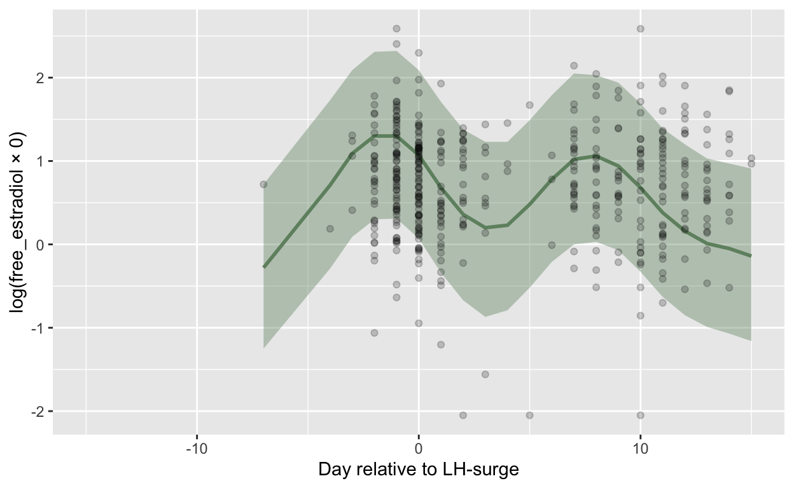
$rmse_lh_imputed
[1] " 0.77"df <- gocd2 %>% select(id, cycle, bc_day, fc_day, lh_day, hormone = estradiol_lcms, hormone_cens = estradiol_lcms_cens, cycle_length, age, partner)
summarise_hormone(df = df,
Dataset = "GOCD2",
Hormone = "Estradiol LCMS",
Method = "Salivary liquid chromatography–mass spectrometry",
Citation = "Jünger, J., Kordsmeyer, T. L., Gerlach, T. M., & Penke, L. (2018). Fertile women evaluate male bodies as more attractive, regardless of masculinity. Evolution and Human Behavior: Official Journal of the Human Behavior and Evolution Society, 39(4), 412–423. https://doi.org/10.1016/j.evolhumbehav.2018.03.007",
LOD = NA,
LOQ = 1,
CV_intra = "4.7-8.3% (10ng/ml to 0.01ng/ml)",
CV_inter = "4.3-9.1% (10ng/ml to 0.01ng/ml)",
Procedure = "Next, the saliva samples were collected via passive drool. For hormone assays, we collected four saliva samples from each participant (one per testing session). Contamination of saliva samples was minimized by asking participants to abstain from eating, drinking (except plain water), smoking, chewing gum or brushing teeth for at least one hour before each session. The samples were stored at -80°C directly after collection until shipment on dry ice to the Kirschbaum Lab at Technical University of Dresden, Germany, where estradiol, progesterone, testosterone and cortisol was assessed via liquid chromatography mass spectrometry (LCMS; Gao, Stalder, & Kirschbaum, 2015). Since the LCMS analysis of the estradiol levels did only detect 22% of all possible values, the samples were reanalyzed using the highly sensitive 17β-estradiol enzyme immunoassay kit (IBL International, Hamburg, Germany). These latter estradiol values were used in subsequent analyses. ",
Scheduling = "Peri-ovulatory & Luteal 'Sessions two to five, the computer-based testing sessions, took place across two ovulatory cycles per participant, once per cycle during the fertile and once during the luteal phase. To control for possible effects of diurnal changes in hormone levels (Bao et al., 2003; Veldhuis et al., 1988), all sessions took place in the second half of the day (mainly between 11.30 am and 6 pm).'",
LH_test = "highly sensitive (10 mIU/ml) urine ovulation test strips from purbay®, which measure the luteinizing hormone (LH). These LH-tests had to be done at home at the estimated day of ovulation and the four days prior to that and results were self- reported by the participants.")`summarise()` has regrouped the output.
Joining with `by = join_by(bc_day)`
`summarise()` has regrouped the output.
ℹ Summaries were computed grouped by id and cycle.
ℹ Output is grouped by id.
ℹ Use `summarise(.groups = "drop_last")` to silence this message.
ℹ Use `summarise(.by = c(id, cycle))` for per-operation grouping
(`?dplyr::dplyr_by`) instead.Warning: Results may not be meaningful for censored models.Warning: Results may not be meaningful for censored models.Warning: Rows containing NAs were excluded from the model.
Warning: Rows containing NAs were excluded from the model.Recomputing 'bayes_R2'Warning: Results may not be meaningful for censored models.Warning: Results may not be meaningful for censored models.Warning in sqrt(r2[, "Estimate"]): NaNs producedWarning in sqrt(r2[, "Q2.5"]): NaNs producedWarning in sqrt(r2[, "Q97.5"]): NaNs producedRecomputing 'bayes_R2'Warning: Results may not be meaningful for censored models.Warning: Results may not be meaningful for censored models.Warning in sqrt(r2[, "Estimate"]): NaNs producedWarning in sqrt(r2[, "Q2.5"]): NaNs producedWarning in sqrt(r2[, "Q97.5"]): NaNs producedRecomputing 'bayes_R2'Warning: Results may not be meaningful for censored models.Warning: Results may not be meaningful for censored models.Warning in sqrt(r2[, "Estimate"]): NaNs producedWarning in sqrt(r2[, "Q2.5"]): NaNs producedWarning in sqrt(r2[, "Q97.5"]): NaNs produced$Dataset
[1] "GOCD2"
$Citation
[1] "Jünger, J., Kordsmeyer, T. L., Gerlach, T. M., & Penke, L. (2018). Fertile women evaluate male bodies as more attractive, regardless of masculinity. Evolution and Human Behavior: Official Journal of the Human Behavior and Evolution Society, 39(4), 412–423. https://doi.org/10.1016/j.evolhumbehav.2018.03.007"
$Hormone
[1] "Estradiol LCMS"
$Method
[1] "Salivary liquid chromatography–mass spectrometry"
$`Limit of detection`
[1] NA
$LOQ
[1] 1
$`Intraassay CV`
[1] "4.7-8.3% (10ng/ml to 0.01ng/ml)"
$`Interassay CV`
[1] "4.3-9.1% (10ng/ml to 0.01ng/ml)"
$Procedure
[1] "Next, the saliva samples were collected via passive drool. For hormone assays, we collected four saliva samples from each participant (one per testing session). Contamination of saliva samples was minimized by asking participants to abstain from eating, drinking (except plain water), smoking, chewing gum or brushing teeth for at least one hour before each session. The samples were stored at -80°C directly after collection until shipment on dry ice to the Kirschbaum Lab at Technical University of Dresden, Germany, where estradiol, progesterone, testosterone and cortisol was assessed via liquid chromatography mass spectrometry (LCMS; Gao, Stalder, & Kirschbaum, 2015). Since the LCMS analysis of the estradiol levels did only detect 22% of all possible values, the samples were reanalyzed using the highly sensitive 17β-estradiol enzyme immunoassay kit (IBL International, Hamburg, Germany). These latter estradiol values were used in subsequent analyses. "
$Scheduling
[1] "Peri-ovulatory & Luteal 'Sessions two to five, the computer-based testing sessions, took place across two ovulatory cycles per participant, once per cycle during the fertile and once during the luteal phase. To control for possible effects of diurnal changes in hormone levels (Bao et al., 2003; Veldhuis et al., 1988), all sessions took place in the second half of the day (mainly between 11.30 am and 6 pm).'"
$LH_test
[1] "highly sensitive (10 mIU/ml) urine ovulation test strips from purbay®, which measure the luteinizing hormone (LH). These LH-tests had to be done at home at the estimated day of ovulation and the four days prior to that and results were self- reported by the participants."
$distribution`stat_bin()` using `bins = 30`. Pick better value `binwidth`.Warning: Removed 24 rows containing non-finite outside the scale range
(`stat_bin()`).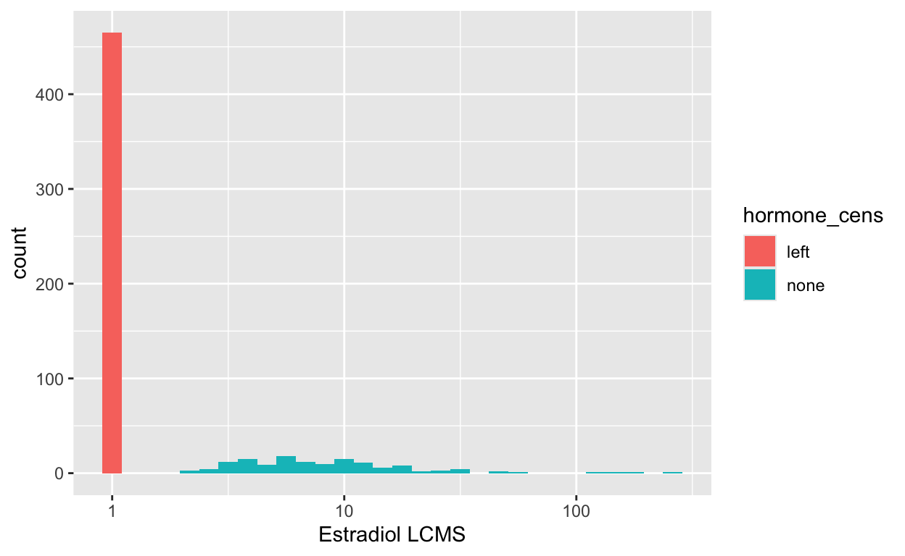
$mean
[1] 4.096589
$logmean
[1] 0.4829841
$logsd
[1] 0.9771497
$median
[1] 1
$sd
[1] 15.39471
$mad
[1] 0
$range
[1] "1.00, 260.00"
$missing
[1] 24
$outliers
[1] 10
$censored
[1] 465
$n_women
[1] 157
$n_cycles
[1] 398
$n_days
[1] 628
$age
[1] "23.2±3.45"
$in_relationship
[1] "48%"
$cycle_length
[1] "29.5±6.54"
$usable_n
[1] 554
$usable_n_women
[1] 157
$no_lh_surge_woman
[1] "9/125 (7%)"
$no_lh_surge_cycle
[1] "58/244 (24%)"
$var_id_loo
[1] "-1.00 [-1.00;-1.00]"
$var_cycle_loo
[1] "-1.00 [-1.00;-1.00]"
$var_id
[1] "1.42 [0.64;2.09] (48%)"
$var_cycle
[1] "0.97 [0.06;1.90] (35%)"
$var_resid
[1] "2.57 [2.11;3.12] (17%)"
$bc_day_modelWarning: There were 5 divergent transitions after warmup. Increasing
adapt_delta above 0.99 may help. See
http://mc-stan.org/misc/warnings.html#divergent-transitions-after-warmup Family: gaussian
Links: mu = identity
Formula: log(hormone) | cens(hormone_cens) ~ s(bc_day) + (1 | id) + (1 | id:cycle)
Data: df (Number of observations: 548)
Draws: 4 chains, each with iter = 2000; warmup = 1000; thin = 1;
total post-warmup draws = 4000
Smoothing Spline Hyperparameters:
Estimate Est.Error l-95% CI u-95% CI Rhat Bulk_ESS
sds(sbc_day_1) 1.72 1.52 0.07 5.45 1.00 1951
Tail_ESS
sds(sbc_day_1) 2247
Multilevel Hyperparameters:
~id (Number of levels: 157)
Estimate Est.Error l-95% CI u-95% CI Rhat Bulk_ESS
sd(Intercept) 1.37 0.40 0.37 2.08 1.01 409
Tail_ESS
sd(Intercept) 264
~id:cycle (Number of levels: 357)
Estimate Est.Error l-95% CI u-95% CI Rhat Bulk_ESS
sd(Intercept) 0.94 0.51 0.07 1.91 1.01 364
Tail_ESS
sd(Intercept) 634
Regression Coefficients:
Estimate Est.Error l-95% CI u-95% CI Rhat Bulk_ESS Tail_ESS
Intercept -2.27 0.33 -2.94 -1.68 1.00 5901 3020
sbc_day_1 3.22 5.99 -5.08 18.95 1.00 2738 1553
Further Distributional Parameters:
Estimate Est.Error l-95% CI u-95% CI Rhat Bulk_ESS Tail_ESS
sigma 2.62 0.26 2.15 3.16 1.00 1267 2054
Draws were sampled using sample(hmc). For each parameter, Bulk_ESS
and Tail_ESS are effective sample size measures, and Rhat is the potential
scale reduction factor on split chains (at convergence, Rhat = 1).
$r_bc
[1] "0.30 [0.05;0.53]"
$rmse_bc
[1] "3.93 [3.28;4.71]"
$r_loo_bc
[1] "NaN [NaN;NaN]"
$r_bc_stirn
[1] "-0.01 [-0.09; 0.08]"
$r_log_bc_stirn
[1] "-0.00 [-0.09; 0.08]"
$r_diff_bc_stirn
[1] "-0.01 [-0.10; 0.07]"
$r_log_diff_bc_stirn
[1] " 0.03 [-0.05; 0.12]"
$r_bc_imputed
[1] "-0.01 [-0.09; 0.08]"
$r_diff_bc_imputed
[1] "-0.00 [-0.09; 0.08]"
$sd_bc_imputed
[1] "0.40 (41%)"
$r_diff_bc_imputed_rr
[1] "-0.01 [-0.14; 0.12]"
$imputed_bc_vs_measured_graphWarning: Removed 9 rows containing missing values or values outside the scale
range (`geom_smooth()`).Warning: Removed 9 rows containing missing values or values outside the scale
range (`geom_point()`).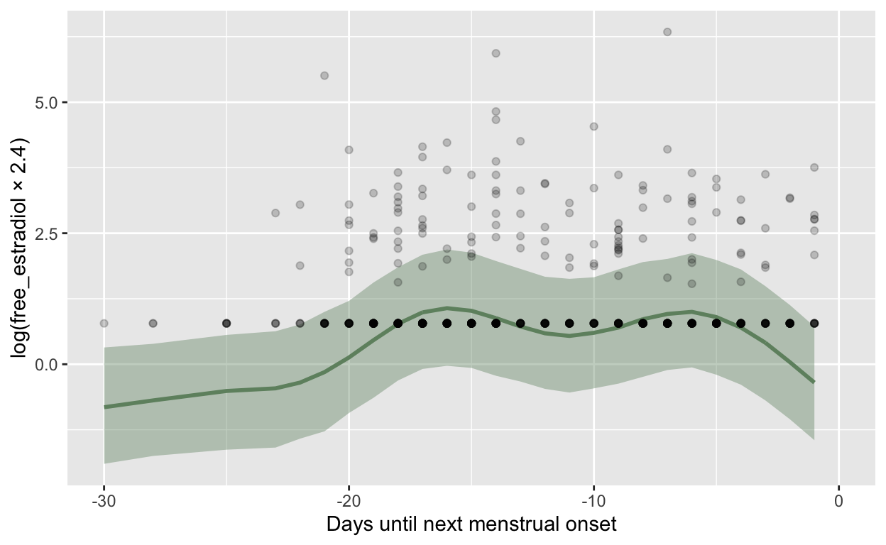
$rmse_bc_imputed
[1] " 1.24"
$fc_day_model
Family: gaussian
Links: mu = identity
Formula: log(hormone) | cens(hormone_cens) ~ s(fc_day) + (1 | id) + (1 | id:cycle)
Data: df (Number of observations: 378)
Draws: 4 chains, each with iter = 2000; warmup = 1000; thin = 1;
total post-warmup draws = 4000
Smoothing Spline Hyperparameters:
Estimate Est.Error l-95% CI u-95% CI Rhat Bulk_ESS
sds(sfc_day_1) 2.40 1.75 0.18 6.60 1.00 1930
Tail_ESS
sds(sfc_day_1) 1970
Multilevel Hyperparameters:
~id (Number of levels: 125)
Estimate Est.Error l-95% CI u-95% CI Rhat Bulk_ESS
sd(Intercept) 1.56 0.49 0.40 2.46 1.00 585
Tail_ESS
sd(Intercept) 333
~id:cycle (Number of levels: 244)
Estimate Est.Error l-95% CI u-95% CI Rhat Bulk_ESS
sd(Intercept) 0.96 0.58 0.05 2.10 1.00 425
Tail_ESS
sd(Intercept) 1078
Regression Coefficients:
Estimate Est.Error l-95% CI u-95% CI Rhat Bulk_ESS Tail_ESS
Intercept -2.62 0.42 -3.52 -1.86 1.00 4183 3089
sfc_day_1 4.63 7.07 -8.04 21.55 1.00 2365 1848
Further Distributional Parameters:
Estimate Est.Error l-95% CI u-95% CI Rhat Bulk_ESS Tail_ESS
sigma 2.66 0.33 2.05 3.38 1.00 1077 1662
Draws were sampled using sample(hmc). For each parameter, Bulk_ESS
and Tail_ESS are effective sample size measures, and Rhat is the potential
scale reduction factor on split chains (at convergence, Rhat = 1).
$r_fc
[1] "0.47 [0.15;0.64]"
$rmse_fc
[1] "4.21 [3.33;5.24]"
$r_loo_fc
[1] "NaN [NaN;NaN]"
$r_fc_stirn
[1] " 0.00 [-0.10; 0.10]"
$r_log_fc_stirn
[1] "-0.03 [-0.13; 0.07]"
$r_diff_fc_stirn
[1] "-0.01 [-0.11; 0.09]"
$r_log_diff_fc_stirn
[1] " 0.04 [-0.06; 0.14]"
$r_fc_imputed
[1] " 0.10 [ 0.00; 0.20]"
$r_diff_fc_imputed
[1] " 0.09 [-0.01; 0.19]"
$sd_fc_imputed
[1] "0.31 (36%)"
$r_diff_fc_imputed_rr
[1] " 0.15 [-0.02; 0.31]"
$imputed_fc_vs_measured_graphWarning: Removed 177 rows containing missing values or values outside the
scale range (`geom_smooth()`).Warning: Removed 177 rows containing missing values or values outside the
scale range (`geom_point()`).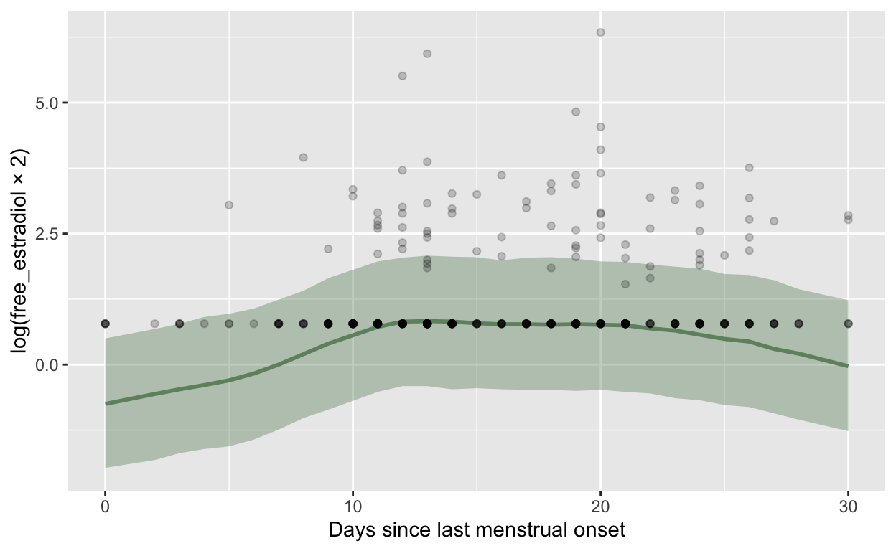
$rmse_fc_imputed
[1] " 1.08"
$lh_day_modelWarning: There were 1 divergent transitions after warmup. Increasing
adapt_delta above 0.99 may help. See
http://mc-stan.org/misc/warnings.html#divergent-transitions-after-warmup Family: gaussian
Links: mu = identity
Formula: log(hormone) | cens(hormone_cens) ~ s(lh_day) + (1 | id) + (1 | id:cycle)
Data: df %>% filter(between(lh_day, -15, 15)) (Number of observations: 429)
Draws: 4 chains, each with iter = 2000; warmup = 1000; thin = 1;
total post-warmup draws = 4000
Smoothing Spline Hyperparameters:
Estimate Est.Error l-95% CI u-95% CI Rhat Bulk_ESS
sds(slh_day_1) 1.41 1.32 0.05 4.87 1.00 2047
Tail_ESS
sds(slh_day_1) 2148
Multilevel Hyperparameters:
~id (Number of levels: 145)
Estimate Est.Error l-95% CI u-95% CI Rhat Bulk_ESS
sd(Intercept) 1.07 0.50 0.05 1.96 1.01 336
Tail_ESS
sd(Intercept) 236
~id:cycle (Number of levels: 256)
Estimate Est.Error l-95% CI u-95% CI Rhat Bulk_ESS
sd(Intercept) 0.81 0.50 0.05 1.86 1.01 419
Tail_ESS
sd(Intercept) 869
Regression Coefficients:
Estimate Est.Error l-95% CI u-95% CI Rhat Bulk_ESS Tail_ESS
Intercept -2.37 0.36 -3.14 -1.72 1.00 3675 2546
slh_day_1 0.14 4.50 -8.40 10.98 1.00 2139 1598
Further Distributional Parameters:
Estimate Est.Error l-95% CI u-95% CI Rhat Bulk_ESS Tail_ESS
sigma 2.77 0.30 2.23 3.42 1.00 1334 2466
Draws were sampled using sample(hmc). For each parameter, Bulk_ESS
and Tail_ESS are effective sample size measures, and Rhat is the potential
scale reduction factor on split chains (at convergence, Rhat = 1).
$r_lh
[1] "0.29 [0.05;0.50]"
$rmse_lh
[1] "4.07 [3.30;5.02]"
$r_loo_lh
[1] "NaN [NaN;NaN]"
$r_prob_lh
[1] " 0.01 [-0.09; 0.10]"
$r_log_prob_lh
[1] " 0.04 [-0.05; 0.14]"
$r_diff_prob_lh
[1] " 0.09 [-0.00; 0.18]"
$r_log_diff_prob_lh
[1] " 0.09 [-0.00; 0.19]"
$r_lh_imputed
[1] " 0.04 [-0.05; 0.14]"
$r_diff_lh_imputed
[1] " 0.08 [-0.01; 0.18]"
$sd_lh_imputed
[1] "0.43 (43%)"
$r_diff_lh_imputed_rr
[1] " 0.12 [-0.02; 0.26]"
$imputed_lh_vs_measured_graphWarning: Removed 125 rows containing missing values or values outside the
scale range (`geom_smooth()`).Warning: Removed 125 rows containing missing values or values outside the
scale range (`geom_point()`).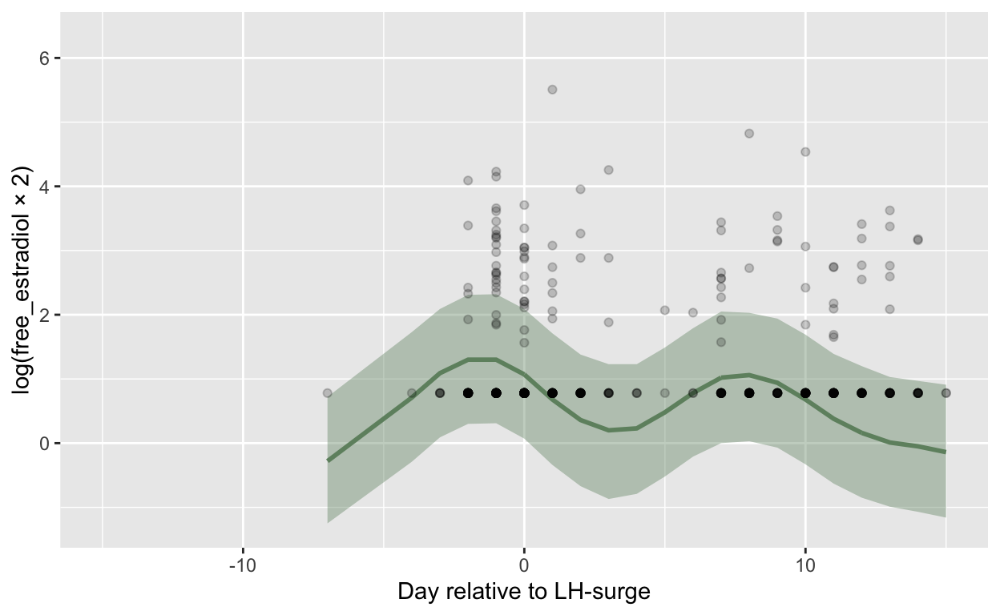
$rmse_lh_imputed
[1] " 1.07"df <- gocd2 %>% select(id, cycle, bc_day, fc_day, lh_day, estradiol, progesterone, cycle_length)
summarise_hormones(df = df, Dataset = "GOCD2")Joining with `by = join_by(bc_day)`Warning: Rows containing NAs were excluded from the model.Warning: Rows containing NAs were excluded from the model.
Warning: Rows containing NAs were excluded from the model.
Warning: Rows containing NAs were excluded from the model.
Warning: Rows containing NAs were excluded from the model.
Warning: Rows containing NAs were excluded from the model.$Dataset
[1] "GOCD2"
$Hormone
[1] "Estradiol & Progesterone"
$Method
[1] "Salivary Immunoassay"
$scatterplotWarning: Removed 76 rows containing missing values or values outside the scale
range (`geom_point()`).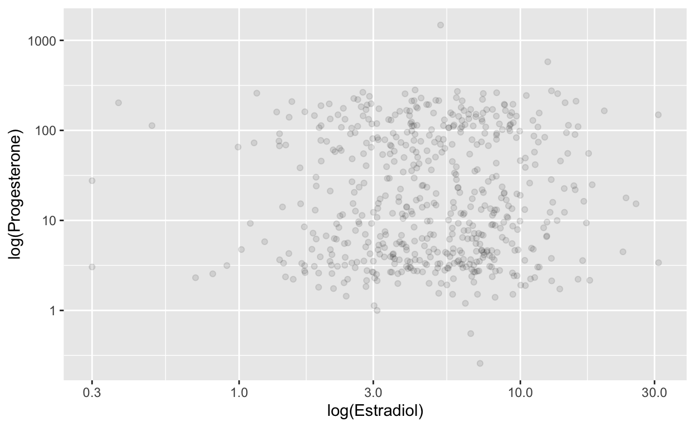
$n_women
[1] 157
$n_cycles
[1] 398
$n_days
[1] 628
$r_ep
[1] " 0.02 [-0.06; 0.11]"
$r_log_ep
[1] " 0.03 [-0.06; 0.11]"
$r_e_ratio
[1] " 0.29 [ 0.21; 0.36]"
$r_log_e_ratio
[1] " 0.37 [ 0.29; 0.44]"
$r_p_ratio
[1] "-0.26 [-0.33;-0.18]"
$r_log_p_ratio
[1] "-0.92 [-0.93;-0.91]"
$usable_n
[1] 512
$r_bc_ratio
[1] " 0.36 [ 0.28; 0.43]"
$r_bc_log_ratio
[1] " 0.65 [ 0.59; 0.69]"
$m_bc_prob_rat
Family: gaussian
Links: mu = identity
Formula: prc_stirn_bc ~ log(estradiol) + log(ratio)
Data: df (Number of observations: 507)
Draws: 4 chains, each with iter = 2000; warmup = 1000; thin = 1;
total post-warmup draws = 4000
Regression Coefficients:
Estimate Est.Error l-95% CI u-95% CI Rhat Bulk_ESS
Intercept 0.50 0.02 0.46 0.55 1.00 2690
logestradiol -0.08 0.01 -0.10 -0.06 1.00 2763
logratio 0.10 0.00 0.09 0.10 1.00 3569
Tail_ESS
Intercept 2430
logestradiol 2409
logratio 3122
Further Distributional Parameters:
Estimate Est.Error l-95% CI u-95% CI Rhat Bulk_ESS Tail_ESS
sigma 0.16 0.01 0.15 0.18 1.00 2753 2304
Draws were sampled using sample(hmc). For each parameter, Bulk_ESS
and Tail_ESS are effective sample size measures, and Rhat is the potential
scale reduction factor on split chains (at convergence, Rhat = 1).
$r_erat_bc
[1] "0.68 [0.63;0.72]"
$m_bc_prob
Family: gaussian
Links: mu = identity
Formula: prc_stirn_bc ~ s(log(estradiol), log(progesterone))
Data: df (Number of observations: 507)
Draws: 4 chains, each with iter = 2000; warmup = 1000; thin = 1;
total post-warmup draws = 4000
Smoothing Spline Hyperparameters:
Estimate Est.Error l-95% CI
sds(slogestradiollogprogesterone_1) 0.16 0.06 0.07
u-95% CI Rhat Bulk_ESS Tail_ESS
sds(slogestradiollogprogesterone_1) 0.30 1.00 1178 2085
Regression Coefficients:
Estimate Est.Error l-95% CI u-95% CI
Intercept 0.25 0.01 0.23 0.26
slogestradiollogprogesterone_1 -0.86 0.47 -1.68 0.16
slogestradiollogprogesterone_2 -0.22 0.21 -0.61 0.20
Rhat Bulk_ESS Tail_ESS
Intercept 1.00 6684 3065
slogestradiollogprogesterone_1 1.00 1943 2004
slogestradiollogprogesterone_2 1.00 2129 2383
Further Distributional Parameters:
Estimate Est.Error l-95% CI u-95% CI Rhat Bulk_ESS Tail_ESS
sigma 0.16 0.00 0.15 0.17 1.00 5077 2902
Draws were sampled using sample(hmc). For each parameter, Bulk_ESS
and Tail_ESS are effective sample size measures, and Rhat is the potential
scale reduction factor on split chains (at convergence, Rhat = 1).
$r_loo_bc
[1] "0.69 [0.63;0.73]"
$r_fc_ratio
[1] " 0.35 [ 0.25; 0.44]"
$r_fc_log_ratio
[1] " 0.61 [ 0.54; 0.67]"
$m_fc_prob_rat
Family: gaussian
Links: mu = identity
Formula: prc_stirn_fc ~ log(estradiol) + log(ratio)
Data: df (Number of observations: 352)
Draws: 4 chains, each with iter = 2000; warmup = 1000; thin = 1;
total post-warmup draws = 4000
Regression Coefficients:
Estimate Est.Error l-95% CI u-95% CI Rhat Bulk_ESS
Intercept 0.48 0.03 0.42 0.53 1.00 2722
logestradiol -0.08 0.01 -0.11 -0.05 1.00 2740
logratio 0.09 0.01 0.08 0.10 1.00 3377
Tail_ESS
Intercept 2749
logestradiol 2663
logratio 2854
Further Distributional Parameters:
Estimate Est.Error l-95% CI u-95% CI Rhat Bulk_ESS Tail_ESS
sigma 0.17 0.01 0.16 0.18 1.00 3125 2548
Draws were sampled using sample(hmc). For each parameter, Bulk_ESS
and Tail_ESS are effective sample size measures, and Rhat is the potential
scale reduction factor on split chains (at convergence, Rhat = 1).
$r_erat_fc
[1] "0.64 [0.58;0.70]"
$m_fc_prob
Family: gaussian
Links: mu = identity
Formula: prc_stirn_fc ~ s(log(estradiol), log(progesterone))
Data: df (Number of observations: 352)
Draws: 4 chains, each with iter = 2000; warmup = 1000; thin = 1;
total post-warmup draws = 4000
Smoothing Spline Hyperparameters:
Estimate Est.Error l-95% CI
sds(slogestradiollogprogesterone_1) 0.11 0.06 0.01
u-95% CI Rhat Bulk_ESS Tail_ESS
sds(slogestradiollogprogesterone_1) 0.25 1.01 993 1427
Regression Coefficients:
Estimate Est.Error l-95% CI u-95% CI
Intercept 0.23 0.01 0.22 0.25
slogestradiollogprogesterone_1 0.51 0.21 0.07 0.93
slogestradiollogprogesterone_2 -1.45 0.35 -2.08 -0.68
Rhat Bulk_ESS Tail_ESS
Intercept 1.00 7187 2899
slogestradiollogprogesterone_1 1.00 2876 2811
slogestradiollogprogesterone_2 1.00 2357 2501
Further Distributional Parameters:
Estimate Est.Error l-95% CI u-95% CI Rhat Bulk_ESS Tail_ESS
sigma 0.17 0.01 0.16 0.18 1.00 5795 3137
Draws were sampled using sample(hmc). For each parameter, Bulk_ESS
and Tail_ESS are effective sample size measures, and Rhat is the potential
scale reduction factor on split chains (at convergence, Rhat = 1).
$r_loo_fc
[1] "0.65 [0.58;0.70]"
$r_lh_ratio
[1] " 0.27 [ 0.17; 0.36]"
$r_lh_log_ratio
[1] " 0.58 [ 0.51; 0.64]"
$m_lh_prob_rat
Family: gaussian
Links: mu = identity
Formula: fertile_lh ~ log(estradiol) + log(ratio)
Data: df (Number of observations: 393)
Draws: 4 chains, each with iter = 2000; warmup = 1000; thin = 1;
total post-warmup draws = 4000
Regression Coefficients:
Estimate Est.Error l-95% CI u-95% CI Rhat Bulk_ESS
Intercept 0.67 0.04 0.58 0.76 1.00 2957
logestradiol -0.11 0.02 -0.16 -0.06 1.00 2945
logratio 0.14 0.01 0.12 0.16 1.00 3440
Tail_ESS
Intercept 2572
logestradiol 2443
logratio 2935
Further Distributional Parameters:
Estimate Est.Error l-95% CI u-95% CI Rhat Bulk_ESS Tail_ESS
sigma 0.29 0.01 0.27 0.31 1.00 3124 2712
Draws were sampled using sample(hmc). For each parameter, Bulk_ESS
and Tail_ESS are effective sample size measures, and Rhat is the potential
scale reduction factor on split chains (at convergence, Rhat = 1).
$r_erat_lh
[1] "0.61 [0.54;0.66]"
$m_lh_prob
Family: gaussian
Links: mu = identity
Formula: fertile_lh ~ s(log(estradiol), log(progesterone))
Data: df (Number of observations: 393)
Draws: 4 chains, each with iter = 2000; warmup = 1000; thin = 1;
total post-warmup draws = 4000
Smoothing Spline Hyperparameters:
Estimate Est.Error l-95% CI
sds(slogestradiollogprogesterone_1) 0.23 0.10 0.04
u-95% CI Rhat Bulk_ESS Tail_ESS
sds(slogestradiollogprogesterone_1) 0.44 1.00 786 717
Regression Coefficients:
Estimate Est.Error l-95% CI u-95% CI
Intercept 0.33 0.01 0.30 0.36
slogestradiollogprogesterone_1 -0.92 0.76 -2.24 0.71
slogestradiollogprogesterone_2 -0.38 0.29 -0.96 0.18
Rhat Bulk_ESS Tail_ESS
Intercept 1.00 6123 3062
slogestradiollogprogesterone_1 1.00 1265 1134
slogestradiollogprogesterone_2 1.00 2341 2459
Further Distributional Parameters:
Estimate Est.Error l-95% CI u-95% CI Rhat Bulk_ESS Tail_ESS
sigma 0.28 0.01 0.26 0.30 1.00 5364 2452
Draws were sampled using sample(hmc). For each parameter, Bulk_ESS
and Tail_ESS are effective sample size measures, and Rhat is the potential
scale reduction factor on split chains (at convergence, Rhat = 1).
$r_loo_lh
[1] "0.62 [0.55;0.67]"